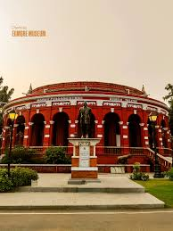

|
 |
|
| | | | | | | | | | | | | | | | | | | | | | | | | | | | | |
The Egmore Museum, located in Egmore, is one of India’s oldest and most famous museums. It showcases ancient sculptures, bronze idols, archaeological collections, coins, paintings, fossils, and cultural artifacts. The museum complex also includes an art gallery and a children’s museum. Its beautiful Indo-Saracenic architecture attracts many visitors and tourists. Students and history lovers visit the museum to learn about South Indian history, art, science, and culture. The Egmore Museum plays an important role in preserving heritage and educating people about the rich traditions and historical achievements of Tamil Nadu and India. |